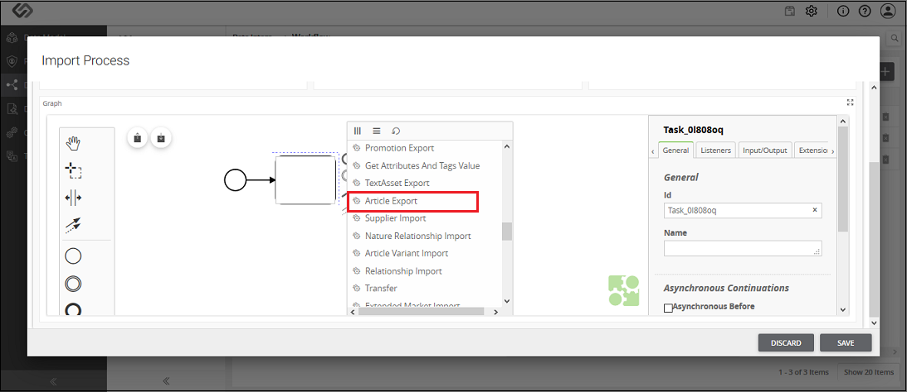
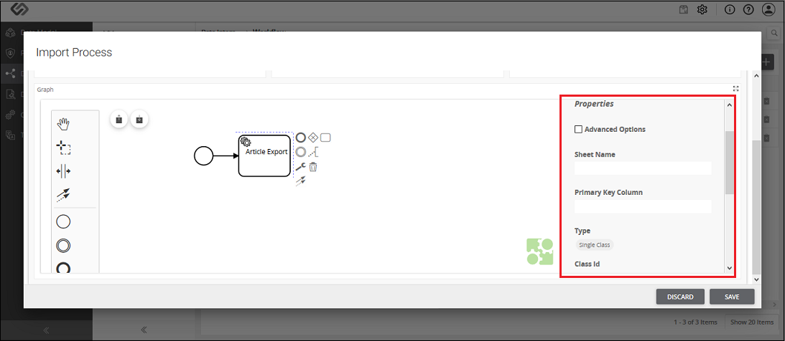

3.2.1 Article Export
Article Export component is used to export one or more articles to the system.



JMS Article Export ? Property Configuration
| Sr. No. |
Screen Element |
Description |
|---|
|
Sheet Name |
- The offboarding file is the Excel file. Excel file may contain different sheets in it.
- Here, we need to mention the sheet name which contains the articles details.
|
|
- Primary
- Key Column
|
All the articles in an offboarding file have unique identification or IDs.
- Whithin the Primary Key Column, we need to define the column name of a sheet
- which contains the unique IDs of the products.
Therefore, a system will fetch all the IDs of the articles from the defined column of the sheet.
|
|
Type |
- Here we need to select one of the following options:
- Single Class: Select this option, if all the articles in an offboarding
file use the same class of the system. For example,
- if all the articles are Individual Article or all the products are PID.
- Column Class: Select this option, if articles in an offboarding file
use different types of classes of the system. For example, there are two products in a sheet;
one is the Individual Article and the other one is the PID.
The value of this field is based on the selection of Type field:
- Class ID: When all the articles in an offboarding file use the same class of the system,
we select the Single Class option from the Type field.
|
|
Class ID/
Class Column |
- Class Column: When articles in an offboarding file use different classes of the system,
we select the Column Class option from the Type field. In this case,
we need to enter the column name of the sheet,
which contains the IDs of all the classes in a Class Column field.
|
|
Multiclassification |
Select this option, if defined articles in a sheet use non-nature classes. |
|
Type |
As soon as you select MultiClassification option, this option will be visible.
Here, we need to select one of the options from below mentioned options:
* Multiple Class: Select this option, if articles in an offboarding file
use multiple system generated non-nature classes.
- Column Class: Select this option, if articles in an offboarding file
use multiple non-nature classes which are yet to be created.
|
|
Select Classes/
Column Name |
The value of this field is based on the selection of Type field:
* Select Classes: When all the articles in an offboarding file
use multiple system generated non-nature classes,
we select the Multiple Class option from the Type field.
In this case, we need to select that system generated classes from the list.
- Class Column Name: When articles in an offboarding file
use multiple non-nature classes which are yet to be created,
we select the Column Class option from the Type field.
In this case, we need to enter the column name of a sheet,
which contains the IDs of all the non-nature classes in the Class Column Name field.
|
|
Taxonomies |
Here we need to enter the column name of a sheet of an offboarding file
which contains the taxonomy details. |